[CMU15445]:基于时间戳的协议
Timestamp Ordering Concurrency Control
基于时间戳的并发控制协议是一个乐观的并发控制协议，这意味着该协议不需要锁来保护底层数据结构，在该协议当中，DBMS使用时间戳来决定事务的冲突事务的调度
时间戳
在该协议当中，每个事务都会被分配一个时间戳，通常使用函数
TS()来计算一个事务的时间戳，这个时间戳有以下特征- 是单调递增的
- 是独一无二的
如果
TS(T_i)<TS(T_j)，那么DBMS就必须确保事务的调度与T_i排在T_j之前的串行调度冲突等价时间戳不一定非要根据系统时间来定，可以使用多种方法来计算一个事务的时间戳
系统时钟
系统时钟是最简单的方法，但是有着一些缺点
- 分布式数据库中，无法确保不同机器的系统时钟完全同步
- 系统的时钟可以回调(如国外的夏令时)，可能会导致时间戳发生混乱
逻辑计数器
在系统内部维护一个计数器，每当创建一个新的事务时，计数器就会递增
这种方法的问题是如果使用一个
int型数据来保存这个计数器，事务量大的话就会导致数据移溢以上两种方法混合
这是现代数据库常用的方法
Basic Timestamp Ordering (BASIC T/O)
基本时间戳协议为每个数据项X维护一对时间戳：
W-TS(X)
成功执行
Write(X)的任意事务的最大时间戳R-TS(X)
成功执行
Read(X)的任意事务的最大时间戳
该协议的基本思想就是: 如果事务即将访问的数据项”来自未来”, 那么该事务回滚，具体协议如下
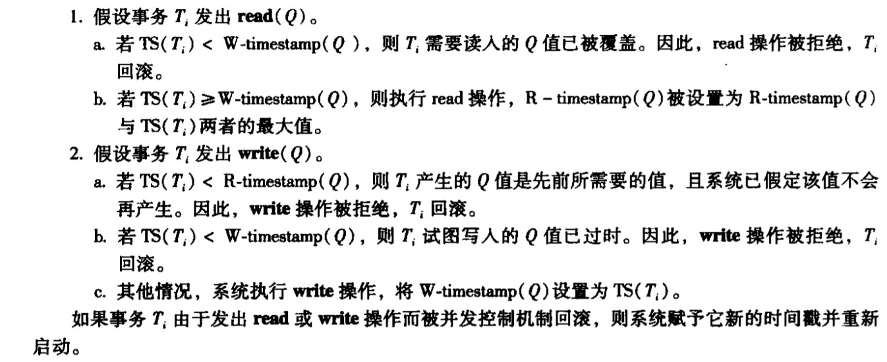
注意每次回滚的时候会赋予新的时间戳，这样可以避免饥饿问题
例
下面例子中,T1的时间戳是1，T2的时间戳是2
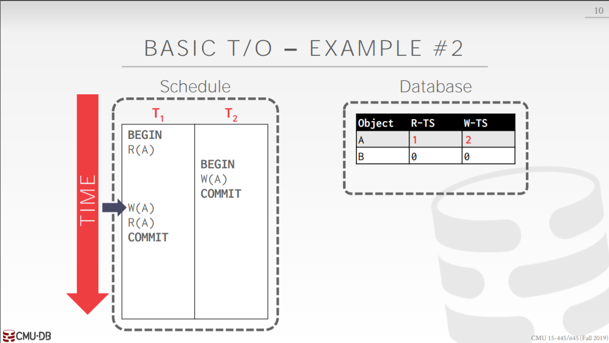
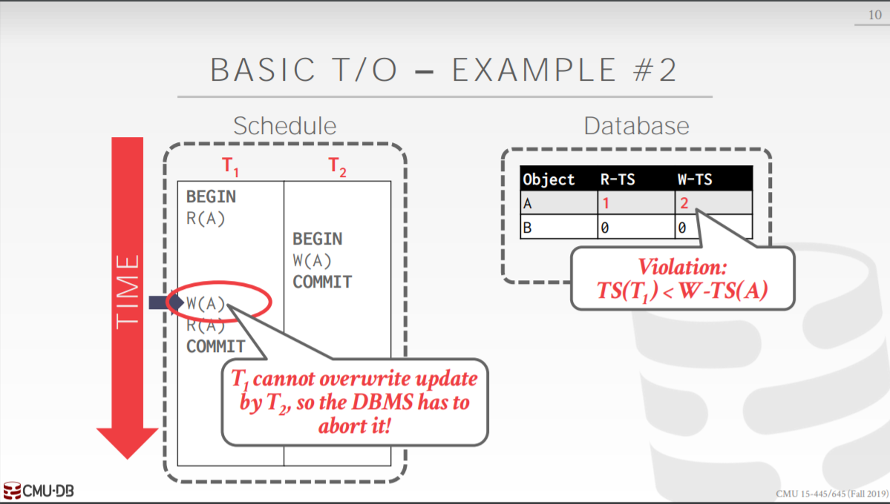
Thomas写规则
该规则是一种基于基本时间戳协议的一种优化，考虑如下情况, 假设TS(T27) < TS(T28)
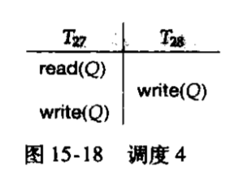
在该例子当中，在基本时间戳协议下，T27的
write(Q)操作会发生回滚，如果数据库直接将该操作忽略，最终在数据库中呈现的效果也是一样的，即Q的值是T28所写，综上，Thomas写规则如下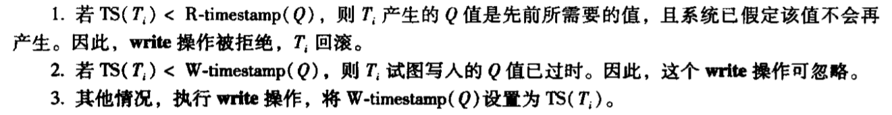
可以看出，只是第二条规则发生了变化而已
Thomas写规则允许非冲突可串行化但是正确的调度，这为调度增加了更多选择
基本时间戳排序协议有以下优缺点
优点
确保了可串行化
避免了死锁，因为没有事务会发生等待
缺点
可能会造成长事务的饥饿问题
需要拷贝数据到事务的工作空间
需要不断更新时间戳
可能会产生不可恢复的调度
可恢复事务
当一个事务仅在它所依赖的所有事务都提交之后才提交时，那么就称该事务为可恢复事务，下面是一个不可恢复事务的例子
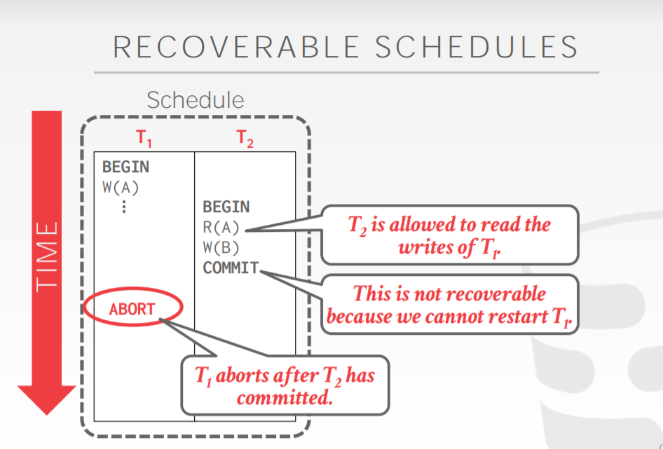
T2依赖于T1,但是其却在T1之前提交，如果T1在此之后终止了，那么T2的操作就无法恢复了，上面给出的也是一个脏读的例子
Optimistic Concurrency Control (OCC)
乐观并发控制协议使用于冲突比较少的数据库当中，在该协议当中，DBMS为每一个事务都创建了一个私有工作空间(private worksace), 在该空间当中
- 所有的修改都会在这个空间进行
- 任何被事务所读的数据项都会被拷贝到私有工作空间
- 私有工作空间中的数据只有事务本身能够读
在OCC中，整个事务被分为了三个阶段
Read Phase
该阶段中，事务会将所有需要的数据拷贝到私有工作空间当中，然后对其应用自己的修改操作，各个事务之间互不影响
Validation Phase
该阶段中，会进行有效性检查，检查该事务是否与其它事务发生了冲突，在该阶段事务会获取到他们的时间戳
Write Phase
如果没有冲突的话，在事务私有空间中的所有修改应用到数据库上，否则，终止并且重启事务
三个阶段的重点在于第二阶段
Validation Phase
在该阶段当中，需要保证事务的调度是冲突可串行化的，DBMS通常会具有一个全局的视野，以获取所有事务的状态
通常有两种方式来进行这种有效性的检查
- Backward Validation
- Forward Validation
Backward Validation
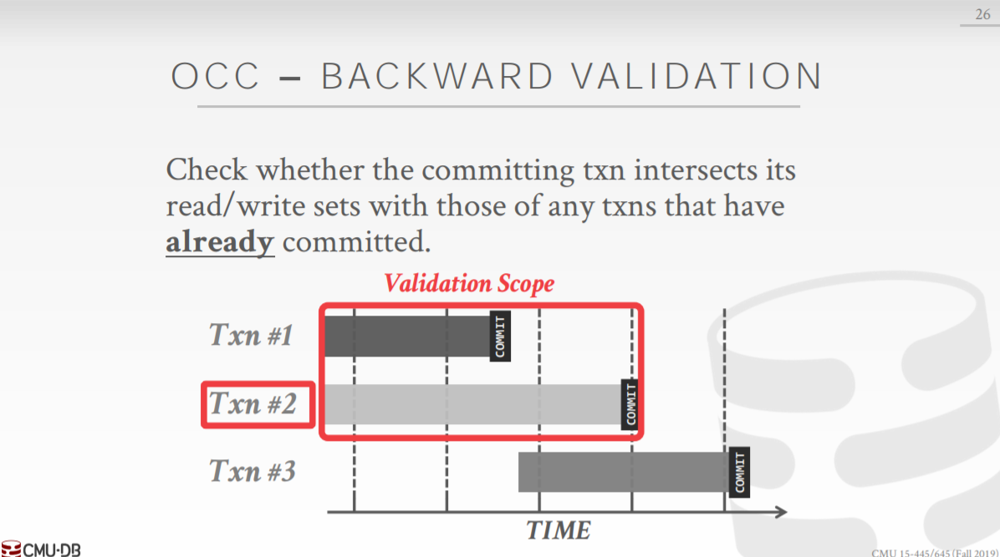
该方法中，在每个事务进行提交的时候，会找到与自己并行并且已经提交过的事务
在上面的例子中，
Txn #1先Commit, 所以TS(#1) < TS(#2), 即在串行化顺序当中，Txn #1应该比Txn #2先执行，但是在他们的并行执行过程中，假设Txn #2执行完Read(X)操作之后，Txn #1执行Write(X), 那么Txn #2读到的就是一个无效的数据，因此需要进行检查Forward Valdation
Froward Valdation与Backward Valdation十分相似, 只不过方向相反而已
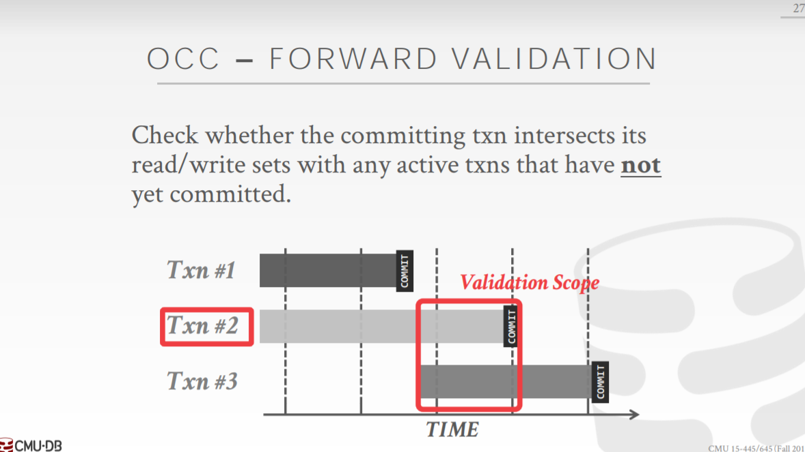
注意: 在Valdation 阶段要么统一使用Backward Valdation要么统一使用Forward Valdation
两个事务之间进行有效性检查的具体方法
令
TS(Ti) < TS(Tj),那么仅当下面三个条件的其中一个满足时Validation Phase才能通过Ti在Tj开始之前就已经完成所有三个阶段
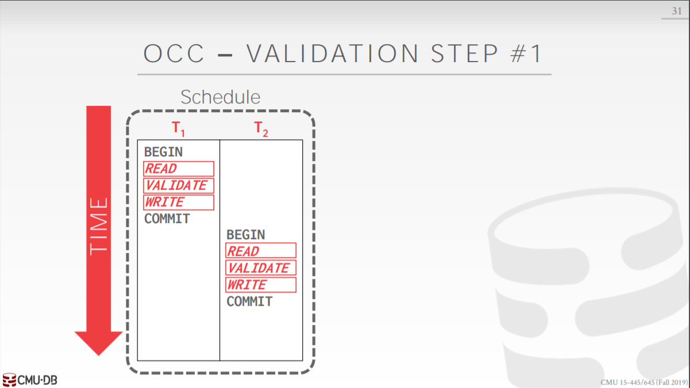
很显然这样做满足串行化
Ti在Tj的
Write Phase开始之前就已经完成，并且Ti的write set与Tj的read set在此时交集为空集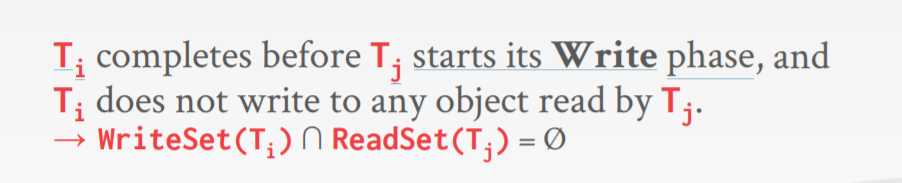
例子
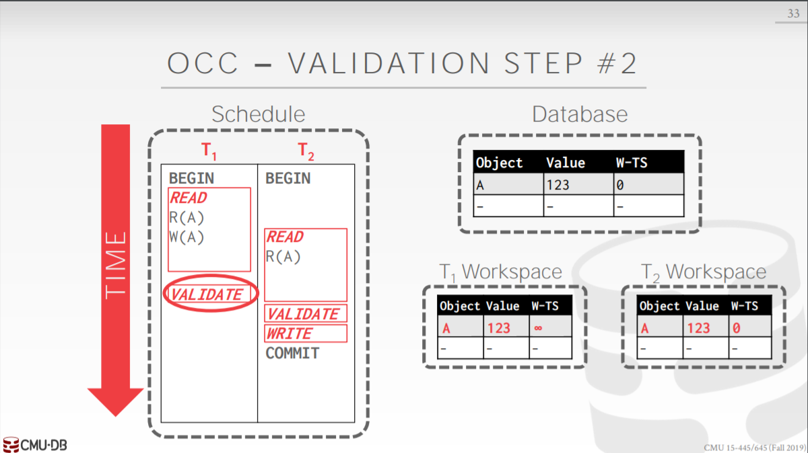
在上面的例子中，T1先进行有效性检查，此时T1的
write set是{A}, T2的read set是{A}, 交集不为空，所以T1中止
Ti的Read阶段比Tj的Read阶段先完成，并且Ti的
write set与Tj的write set以及Tj的read set的交集均为空集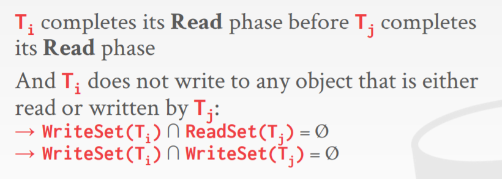
例子
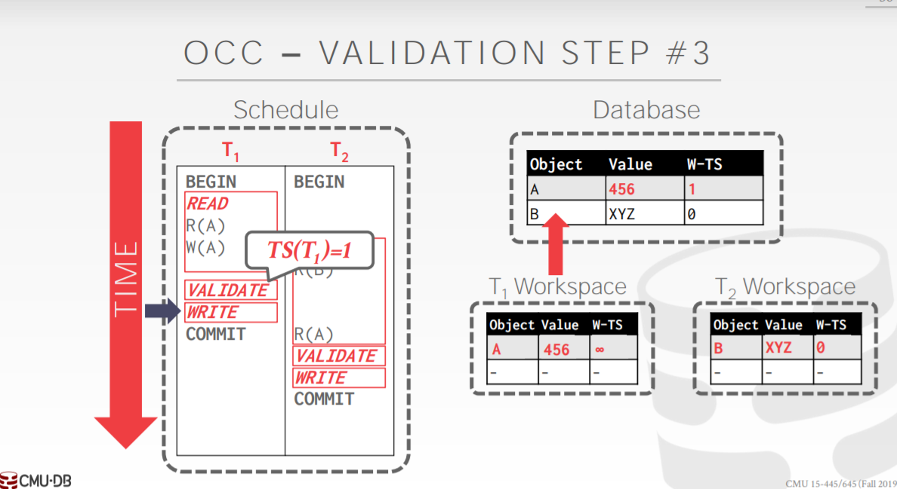
在这个例子当中，T1的有效性检查阶段的
write set为{A}, T2的有效性检查阶段的read set为{B},read set为空，故有效性检查通过
性能分析
OCC适用于冲突较少的数据库中，在这些数据库中它工作的很好，但其仍有着一些性能上的问题
将数据拷贝到每个事务的私有工作空间导致大量工作负载
Validation/Write 阶段的工作瓶颈
实际上，尽管在OCC中没有使用到lock，但是仍然会使用到物理上的latch, 当每个事务进行有效性检查的时候，都会去查看当前正与自己并行的事务的
write set以及read set，这个过程仍然需要使用物理上的latch回滚现象出现的更加频繁
时间戳的获取瓶颈
Partition-Based T/O
该协议的基本思想是：将数据库分割为不相交的子集，称为分区(shards)，然后只检查在同一分区中运行的事务之间的冲突
每个分区都有一把单独的锁，同时也维护了一个事务队列，当事务需要访问该分区中的数据的时候，它需要进入该队列进行排队
在队列中是基于时间戳进行排队的，而时间戳是在事务请求被发送到数据库是获取的，只有时间戳最小的事务能够获取到分区的锁
一旦它获取到该分区上的锁，它就能够访问该分区上的所有数据，此时只有一个事务线程，不需要考虑并发，即没有lock和latch
但是一个事务可能不仅需要获取一个分区上的数据，所以仅当其获取到需要分区上的所有的锁的时候，事务才会开始执行
如果事务想要获取到分区上的数据，但是其并未拥有该分区上的锁，那么它就会终止然后重新启动
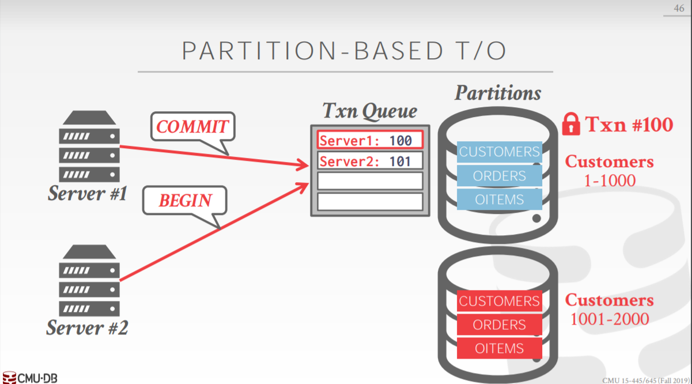
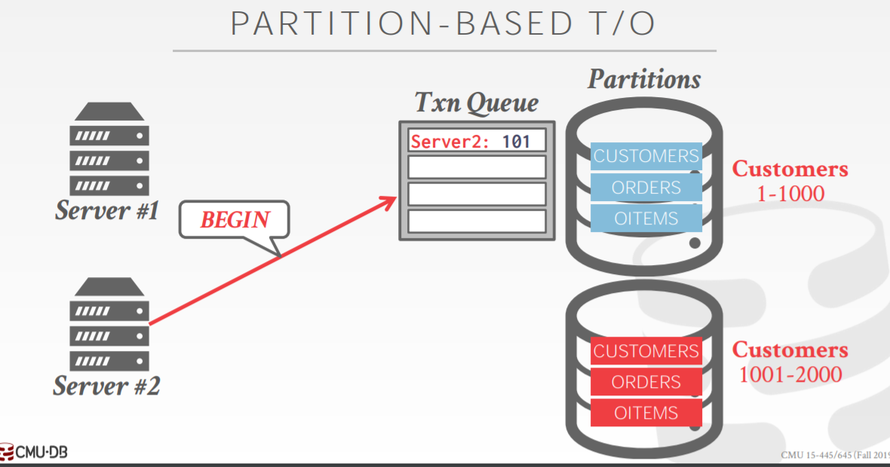
性能分析
当大部分事务只访问一个分区时，该方法会比较快速，当很多事务跨分区访问时，就会导致很多分区闲置
如果DBMS能够提前获知事务需要获取哪些分区上的lock,同样也能加快速度
本博客所有文章除特别声明外，均采用 CC BY-SA 4.0 协议 ，转载请注明出处！